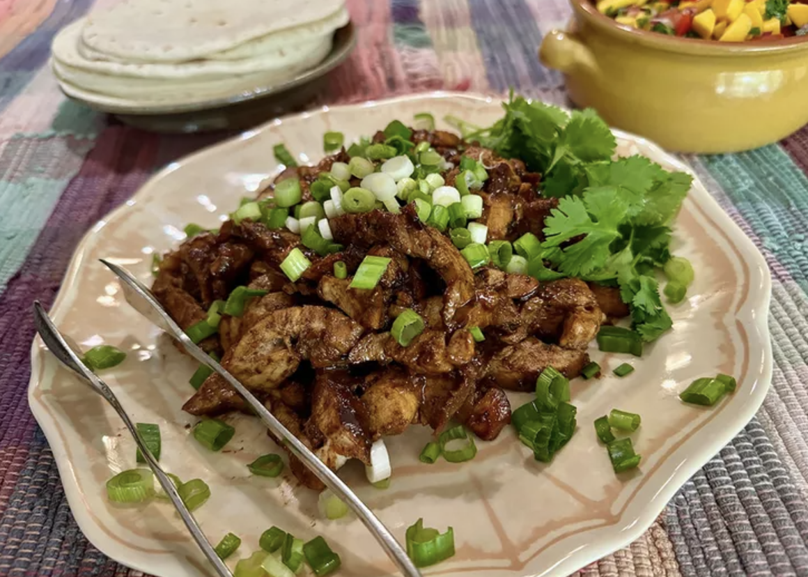

Chicken Adobo Tacos

Description
Chicken Adobo Tacos are a mouthwatering fusion of Mexican and Filipino cuisine, combining tender, marinated chicken thighs with the sweet and tangy flavors of a homemade mango salsa. The chicken is cooked in a rich, savory adobo sauce, then sliced and tucked into warm flour tortillas. Topped with the vibrant mango salsa and garnished with fresh cilantro and green onions, these tacos offer a delightful balance of savory, spicy, and sweet flavors. Perfect for a unique and flavorful taco night, these tacos are sure to impress with their bold, global twist.
Ingredients
- Adobo Chicken:
- 1/3 cup soy sauce
- 1/3 cup white vinegar
- 3 bay leaves
- 1 teaspoon granulated garlic
- 1 1/2 pounds skinless, boneless chicken thighs
- Mango Salsa:
- 2 tablespoons white vinegar
- 1 tablespoon fish sauce
- 1/2 teaspoon avocado oil
- 2 teaspoons white sugar
- 1 pinch ground white pepper, or to taste
- 1 mango, peeled, pitted, and diced
- 1 Roma tomato, seeded and diced
- 1/4 cup minced red onion
- 1/4 cup minced jalapeno pepper, seeds and membranes removed
- 1/2 cup chopped fresh cilantro
- For Tacos:
- 2 tablespoons oil, divided
- 1/2 cup diced onion
- 3 garlic cloves, minced
- 1 1/2 cups water
- 2 tablespoons brown sugar
- 1 teaspoon freshly ground black pepper, or to taste
- 8 (8-inch) flour tortillas
- Chopped cilantro and sliced green onions, for garnish (optional)
Steps to Prepare
- Combine soy sauce, vinegar, bay leaves, and garlic in a large resealable bag. Add chicken, seal, and marinate for at least 20 minutes in the refrigerator.
- Prepare the mango salsa by mixing vinegar, fish sauce, avocado oil, sugar, and pepper in a bowl until sugar dissolves. Add mango, tomato, red onion, jalapeño, and cilantro, tossing to combine. Refrigerate until ready to serve.
- Remove chicken from the marinade, reserving the marinade for later use.
- Heat 1 tablespoon of oil in a skillet over medium-high heat. Brown chicken on both sides for 1 to 2 minutes, then remove from the skillet.
- In the same skillet, sauté onion for 1 minute, then add garlic and cook until fragrant, about 30 seconds.
- Add the reserved marinade, water, brown sugar, and black pepper to the skillet. Bring to a boil.
- Return chicken to the skillet, smooth side down, and reduce heat to low. Simmer uncovered for 15 minutes, then turn the chicken and cook for an additional 10 minutes.
- Remove chicken from the skillet and let it rest. Cook the sauce over medium heat until thickened and syrupy, about 10 minutes. Discard bay leaves.
- Slice chicken into 1/2-inch strips and return to the skillet to coat in the sauce.
- Fill each tortilla with chicken strips and top with mango salsa. Garnish with cilantro and green onions if desired, and serve immediately.